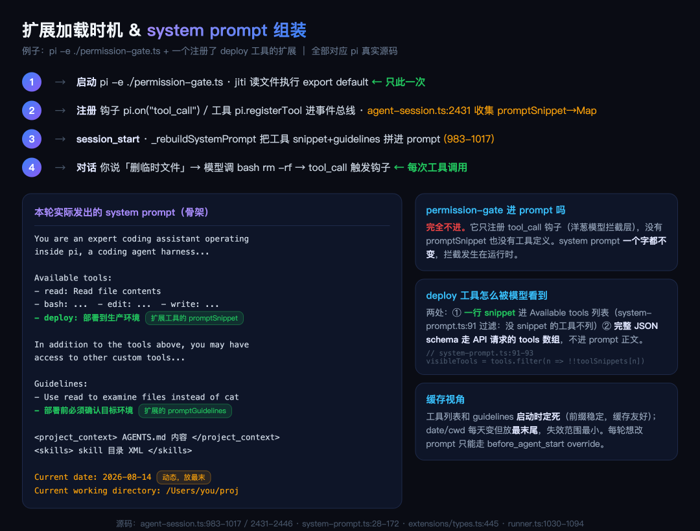

大家好我是郑同学。EP10 讲了洋葱模型的原理，但很多人问：实际怎么写一个扩展？ 这一篇分两部分：先手把手拆 5 个官方示例（每个都贴了获取命令），再看 pi.dev 包目录装机量 Top 5 的社区扩展——每一个都是真实源码、真实装机量、真实安装命令。
● ● ●
Pi 扩展不需要编译、不需要配置。一个 .ts 文件，一个默认导出函数，放对位置就行。
// ~/.pi/agent/extensions/my-ext.ts
import type { ExtensionAPI } from "@earendil-works/pi-coding-agent";
export default function (pi: ExtensionAPI) {
// 你的代码
}
Pi 启动时用 jiti 实时加载 TypeScript，不需要 tsc 编译。保存文件，重启 Pi，扩展就生效。
放哪：
| 位置 | 作用域 |
|---|---|
~/.pi/agent/extensions/*.ts | 全局（所有项目） |
.pi/extensions/*.ts | 项目级（只当前项目） |
前两种是自动发现——文件放进去，Pi 启动时自动加载，不用任何注册动作。全局的放 ~/.pi/agent/extensions/，所有项目共享；项目级的放项目根目录 .pi/extensions/，只在当前项目生效（首次会弹信任确认）。
第三种是手动指定，在启动命令后接 -e 参数：
pi -e ./my-ext.ts
只在本次会话生效，测试完觉得好用，再把文件挪进 ~/.pi/agent/extensions/ 变成常驻。可以叠多个：pi -e ./a.ts -e ./b.ts。
扩展运行时拥有你的全部系统权限，只装你信任的来源。
● ● ●
扩展能做四件事，全部通过 pi 对象：
export default function (pi: ExtensionAPI) {
// 1. 注册工具——模型可以调用
pi.registerTool({
name: "deploy",
description: "部署到生产环境",
parameters: Type.Object({ env: Type.String() }),
async execute(toolCallId, params, signal, onUpdate, ctx) {
return { content: [{ type: "text", text: "部署成功" }] };
},
});
// 2. 注册命令——用户输入 /deploy 触发
pi.registerCommand("deploy", {
description: "一键部署",
handler: async (args, ctx) => {
ctx.ui.notify("开始部署...", "info");
},
});
// 3. 事件钩子——洋葱模型拦截
pi.on("tool_call", async (event, ctx) => {
// before：可以 block
if (event.toolName === "bash" && event.input.command?.includes("rm -rf")) {
return { block: true, reason: "危险操作" };
}
});
pi.on("tool_result", async (event, ctx) => {
// after：只能观察，不能改结果
});
// 4. 动态注册 Provider
pi.registerProvider("local-llama", {
baseUrl: "http://localhost:1234/v1",
apiKey: "dummy",
api: "openai-completions",
models: [{ id: "llama-4", name: "Llama 4" }],
});
}
事件钩子就是 EP10 讲的洋葱模型——tool_call 是 before（可拦截），tool_result 是 after（只观察）。除此之外还有 turn_start、session_start、session_before_compact、session_before_fork 等生命周期事件。
● ● ●
写完扩展自然要问两个问题：扩展代码什么时候跑，模型怎么知道扩展注册的东西。回源码看（agent-session.ts + runner.ts）。
加载时机：启动时一次性。Pi 启动 → jiti 读你的 .ts 文件 → 执行默认导出函数 → 工具、命令、钩子全部注册到位。不是每轮对话都重新加载。/reload 命令会重新走一遍这个流程。
拿权限门控举例，完整时间线：

扩展加载时机与system prompt组装图解
加载和执行是两回事。加载只发生在启动那一刻（jiti 读文件跑一遍你的函数，函数体里只有注册动作，没有业务逻辑）；之后每一轮对话、每一次工具调用，触发的都是已注册的钩子，不会重新读文件。所以你改了 .ts 文件内容，正在跑的会话感知不到，要重启或 /reload 才生效。
图里右侧的对比要看仔细——permission-gate 完全不进 system prompt，它只有钩子没有工具定义，prompt 一个字不变，拦截发生在运行时。而一个注册了 deploy 工具的扩展，进 prompt 的只有一行 snippet（promptSnippet 字段，read.ts:213 可以看到内置工具的样子："Read file contents"），完整的 JSON schema 走 API 请求的 tools 数组，不进 prompt 正文。
模型能看到什么。扩展代码本身不进 system prompt，进的是注册的东西，分三条路：
| 注册的东西 | 进哪 | 时机 |
|---|---|---|
registerTool 的工具定义 | 发给模型的 tools 数组；工具的说明片段进 system prompt | 启动时一次性 |
resources_discover 提供的 skill/prompt | 合并进资源系统，skill 目录进 system prompt | 启动时一次性 |
before_agent_start 改写 | 整体替换本轮 system prompt，只本轮生效 | 每轮对话前 |
源码链路（agent-session.ts:983-1017）：_rebuildSystemPrompt 遍历所有激活工具，收集每个工具的 toolSnippets（说明片段）和 promptGuidelines（使用守则），拼进 system prompt。所以你注册的 deploy 工具，它的 description 和参数说明会写进 system prompt，模型因此知道这个工具存在、什么时候调。
before_agent_start 是唯一能动态改写 system prompt 的口子（runner.ts:1030-1094）：每轮对话前触发，扩展返回 { systemPrompt } 就替换本轮 prompt，存为 override，下一轮自动恢复 base。这个能力衍生01讲缓存时提过——每轮改写会破坏前缀缓存，除非内容是确定性的。
registerCommand、快捷键、UI 组件是纯前端交互，模型完全看不到。
这个设计呼应了 EP10 的结论：稳定的东西（工具定义）启动时进 prompt 配合缓存，动态的东西（每轮改写）走 override 隔离。
● ● ●
社区呼声最高的扩展。Pi 没有内置权限弹窗，CC 的 allow/deny/ask 三态权限靠这个扩展实现。
核心源码只有 35 行：
// permission-gate.ts（核心骨架）
export default function (pi: ExtensionAPI) {
// 定义危险命令模式
const dangerousPatterns = [
/\brm\s+(-rf?|--recursive)/i,
/\bsudo\b/i,
/\b(chmod|chown)\b.*777/i,
];
pi.on("tool_call", async (event, ctx) => {
if (event.toolName !== "bash") return;
const command = event.input.command;
const isDangerous = dangerousPatterns.some(p => p.test(command));
if (isDangerous) {
// 非交互模式直接 block
if (!ctx.hasUI) {
return { block: true, reason: "危险命令被拦截（无 UI 确认）" };
}
// 交互模式弹确认
const choice = await ctx.ui.select(
`⚠️ 危险命令:\n ${command}\n允许？`, ["Yes", "No"]);
if (choice !== "Yes") {
return { block: true, reason: "用户拒绝" };
}
}
});
}
核心设计：用正则匹配危险命令模式，tool_call 事件返回 { block: true } 拦截。交互模式用 ctx.ui.select 弹选择框，非交互模式直接 block。这就是 CC 权限弹窗的 Pi 版本。
获取源码（官方示例仓库）：
# 下载到全局扩展目录，重启 Pi 生效
curl -fsSL https://raw.githubusercontent.com/earendil-works/pi/main/packages/coding-agent/examples/extensions/permission-gate.ts \
-o ~/.pi/agent/extensions/permission-gate.ts
● ● ●
每次对话前自动 Git stash，fork 时可以恢复代码到当时状态。解决「模型改了一半搞砸了，想回退」的问题。
// git-checkpoint.ts（核心骨架）
export default function (pi: ExtensionAPI) {
const checkpoints = new Map<string, string>();
let currentEntryId: string | undefined;
// 每轮对话前：创建 stash
pi.on("turn_start", async () => {
const { stdout } = await pi.exec("git", ["stash", "create"]);
const ref = stdout.trim();
if (ref && currentEntryId) {
checkpoints.set(currentEntryId, ref);
}
});
// fork 时：问用户要不要恢复
pi.on("session_before_fork", async (event, ctx) => {
const ref = checkpoints.get(event.entryId);
if (!ref) return;
const choice = await ctx.ui.select("恢复代码状态？", [
"Yes, 恢复到那个时间点",
"No, 保持当前代码",
]);
if (choice?.startsWith("Yes")) {
await pi.exec("git", ["stash", "apply", ref]);
}
});
// Agent 结束后清理
pi.on("agent_end", async () => checkpoints.clear());
}
核心设计：turn_start 事件 + pi.exec 执行 Git 命令。stash ref 存在 Map 里，key 是 entryId。fork 时从 Map 取出对应的 stash，用 git stash apply 恢复。状态跟着 session 走，branch 时自动对应正确的时间点。
注意源码用的是 git stash create，不是日常的 git stash。这两个差别很大：
git stash（日常用法） | git stash create（扩展用的） | |
|---|---|---|
| 做什么 | 保存改动 + 清空工作区 + 压入 stash 栈 | 只创建快照 commit，返回 SHA |
| 动工作区吗 | 动，改动被收走 | 一个字节不动 |
| 进 stash list 吗 | 进 | 不进 |
扩展必须用 create——turn_start 每轮触发，如果用普通 git stash，会把用户没提交的改动反复收走，工作区直接被清空。create 只在 git 对象库里造一个快照（记录当时工作区状态的悬挂 commit），文件保持原样，也不污染用户的 stash 栈。
恢复也讲究：用 apply 不用 pop。apply 不消费对象，同一个检查点可以恢复多次——正好配合 fork 出多个分支的场景。
获取源码（官方示例仓库）：
# 下载到全局扩展目录，重启 Pi 生效
curl -fsSL https://raw.githubusercontent.com/earendil-works/pi/main/packages/coding-agent/examples/extensions/git-checkpoint.ts \
-o ~/.pi/agent/extensions/git-checkpoint.ts
● ● ●
阻止模型写敏感文件。35 行代码，最简单但最实用。
// protected-paths.ts（完整源码）
export default function (pi: ExtensionAPI) {
const protectedPaths = [".env", ".git/", "node_modules/"];
pi.on("tool_call", async (event, ctx) => {
if (event.toolName !== "write" && event.toolName !== "edit") return;
const path = event.input.path;
const isProtected = protectedPaths.some(p => path.includes(p));
if (isProtected) {
if (ctx.hasUI) {
ctx.ui.notify(`已拦截：${path} 受保护`, "warning");
}
return { block: true, reason: `"${path}" 是受保护路径` };
}
});
}
核心设计：拦截 write 和 edit 工具，检查路径是否包含受保护关键词。和权限门控一样的模式——tool_call + block: true。你可以把 protectedPaths 改成你自己项目的敏感文件列表。
获取源码（官方示例仓库）：
# 下载到全局扩展目录，重启 Pi 生效
curl -fsSL https://raw.githubusercontent.com/earendil-works/pi/main/packages/coding-agent/examples/extensions/protected-paths.ts \
-o ~/.pi/agent/extensions/protected-paths.ts
● ● ●
把所有文件操作转发到远程主机。这是 Pi 的沙箱方案——不需要 Docker，直接 SSH 到远程机器干活。
核心思路是替换 Pi 的文件操作层：
// ssh.ts（核心骨架）
export default function (pi: ExtensionAPI) {
// 用 SSH 执行远程命令
function sshExec(remote: string, command: string): Promise<Buffer> {
return new Promise((resolve, reject) => {
const child = spawn("ssh", [remote, command]);
// ... 收集 stdout/stderr
});
}
// 创建远程版本的文件操作
function createRemoteReadOps(remote, remoteCwd, localCwd) {
const toRemote = (p) => p.replace(localCwd, remoteCwd);
return {
// read 用 cat
readFile: (p) => sshExec(remote, `cat ${toRemote(p)}`),
access: (p) => sshExec(remote, `test -r ${toRemote(p)}`),
};
}
function createRemoteWriteOps(remote, remoteCwd, localCwd) {
const toRemote = (p) => p.replace(localCwd, remoteCwd);
return {
// write 用 base64 编码避免转义问题
writeFile: async (p, content) => {
const b64 = Buffer.from(content).toString("base64");
await sshExec(remote, `echo ${b64} | base64 -d > ${toRemote(p)}`);
},
};
}
// 注册 --ssh flag，替换内置工具
pi.registerFlag("ssh", /* ... */);
// 用 createRemoteReadOps/WriteOps 替换默认工具
pi.replaceTool("read", createReadTool(remoteReadOps));
pi.replaceTool("write", createWriteTool(remoteWriteOps));
pi.replaceTool("bash", createBashTool(remoteBashOps));
}
核心设计：不是拦截工具调用，而是整个替换工具的文件操作层。read 变成 ssh cat，write 变成 ssh base64 -d >，bash 直接在远程执行。Pi 的工具系统允许通过 createReadTool(ops) 注入自定义操作集——这是比单纯 hook 更深层的扩展。
用法：pi -e ./ssh.ts --ssh user@host:/remote/path
获取源码（官方示例仓库）：
# 下载到全局扩展目录，重启 Pi 生效
curl -fsSL https://raw.githubusercontent.com/earendil-works/pi/main/packages/coding-agent/examples/extensions/ssh.ts \
-o ~/.pi/agent/extensions/ssh.ts
● ● ●
替换 Pi 默认的上下文压缩逻辑。用更便宜的模型做摘要，或者用自定义的压缩策略。
// custom-compaction.ts（核心骨架）
export default function (pi: ExtensionAPI) {
pi.on("session_before_compact", async (event, ctx) => {
const { messagesToSummarize, tokensBefore } = event.preparation;
// 用 Gemini Flash 做摘要（比主模型便宜）
const model = ctx.modelRegistry.find("google", "gemini-2.5-flash");
if (!model) return; // 找不到就走默认压缩
// 把消息序列化成文本
const conversationText = serializeConversation(
convertToLlm(messagesToSummarize));
// 用便宜模型生成摘要
const summaryMessages = [
{ role: "system", content: "总结以下对话..." },
{ role: "user", content: conversationText },
];
const result = await complete({
model, messages: summaryMessages,
apiKey: (await ctx.modelRegistry.getApiKeyAndHeaders(model)).apiKey,
});
// 返回自定义摘要，替换默认压缩结果
return { summary: result.text };
});
}
核心设计：session_before_compact 事件拦截压缩流程。用 ctx.modelRegistry.find 找到一个便宜的模型做摘要，complete() 直接调用模型 API。返回 { summary } 替换默认压缩结果。
这个扩展呼应了衍生05讲的pi-deepseek-cache 的 P3 层——自定义压缩 + 确定性摘要，保证缓存前缀稳定。
获取源码（官方示例仓库）：
# 下载到全局扩展目录，重启 Pi 生效
curl -fsSL https://raw.githubusercontent.com/earendil-works/pi/main/packages/coding-agent/examples/extensions/custom-compaction.ts \
-o ~/.pi/agent/extensions/custom-compaction.ts
● ● ●
| 扩展 | 核心机制 | 用到的事件/API | 代码量 |
|---|---|---|---|
| 权限门控 | tool_call + 正则 + block | on("tool_call"), ctx.ui.select | 35行 |
| Git 检查点 | turn_start + pi.exec + stash | on("turn_start"), on("session_before_fork") | 54行 |
| 保护路径 | tool_call + 路径检查 + block | on("tool_call"), ctx.ui.notify | 31行 |
| SSH 远程 | 替换文件操作层 | createReadTool(remoteOps) | 221行 |
| 自定义压缩 | 拦截压缩 + 便宜模型摘要 | on("session_before_compact"), ctx.modelRegistry | 129行 |
前三个都是 35 行以内的微型扩展，用 tool_call 事件 + block: true 就能实现。SSH 和自定义压缩更复杂，涉及工具替换和模型调用。
● ● ●
官方示例教你写，社区扩展告诉你生态在用什么。pi.dev 包目录（pi.dev/packages）按月下载量排序，前五名如下——安装命令逐一从各仓库 README 和 package.json 核实，机制逐一读了源码。
| 排名 | 扩展 | 月下载量 | 一句话 |
|---|---|---|---|
| 1 | pi-mcp-adapter | 354K | 给 Pi 接上 MCP 生态 |
| 2 | @vigolium/piolium | 231K | 多阶段安全审计 |
| 3 | pi-web-access | 222K | 网络访问全家桶 |
| 4 | pi-subagents | 214K | 子 Agent 委派 |
| 5 | context-mode | 73K | 上下文节省 98% |
Pi 核心不带 MCP（衍生05讲过那句 No MCP），需要 MCP server 的项目靠它补齐。月下载 354K，比第二到第五名加起来还多。
pi install npm:pi-mcp-adapter
核心机制一句话：把 MCP server 的工具翻译成 Pi 的 registerTool。启动时读 .mcp.json 配置，用官方 SDK 的三种 transport 连接 server（server-manager.ts:377 的 StdioClientTransport、788-789 的 StreamableHTTPClientTransport 和 SSEClientTransport），把每个 MCP 工具注册成 Pi 工具，工具名加前缀防冲突。
模型调用工具时，执行器把参数转发给 MCP server 的 callTool（direct-tools.ts:520-534）：
// direct-tools.ts:520-534（真实源码）
const result = await withSessionRecovery<ClientCallToolResult>(
{ manager: state.manager, config: state.config,
onNeedsAuth: recoverAuthConnection },
spec.serverName,
(conn) => abortable(conn.client.callTool({
name: spec.originalName,
arguments: params ?? {},
}, requestOptions), ownedSignal),
);
连接不是启动时就建好的。懒连接设计（direct-tools.ts:389-405）：第一次调用某工具时才 lazyConnect；连不上且状态是 needs-auth，自动走 OAuth 认证后重连；认证失败、server 不可用、未连接，每种失败都有独立的错误码写进 details。
它还实现了 MCP 的变更推送（server-manager.ts:587-602）——注册 listChanged 回调，server 端工具列表变了，Pi 侧的工具注册实时跟着变，不用重启。
有意思的细节：session 生命周期管理（index.ts:380-418）。每次 session 重启，先停掉上一个 session 的全部 MCP 连接和 OAuth 运行时，用「generation 计数器」防止旧回调把结果写进新 session。扩展的会话清理和主进程一样重要，不然就是内存泄漏加串话。
装这么多工具，缓存怎么办。直连模式下每个工具注册时只截描述前 100 字符进 system prompt（truncateAtWord(spec.description, 100)，index.ts:161），完整 JSON schema 走 API 请求的 tools 数组。工具集变化那一刻，Pi 核心的 setActiveToolsByName（agent-session.ts:888-903）直接重建 system prompt——那一轮缓存全量 miss，设计接受的代价；稳态下工具集由 .mcp.json 加 metadata cache 决定，前缀稳定命中率恢复。真正的减震在默认模式：proxy 模式只注册一个 mcp 网关工具，约 200 token（README 原话 "One proxy tool (~200 tokens) instead of hundreds"），几百个工具收拢成一个，模型调用时再按需发现；懒连接加 metadata cache 让工具清单跨 session 稳定。装几百个 MCP 工具而缓存命中率不掉，靠的就是这层设计。
名字来自 penetralium（最深的密室）。多个专家 sub-agent 跑多阶段安全审计，官方描述四个关键词：隔离上下文窗口、并发上限、可恢复状态、专家分工。
pi install npm:@vigolium/piolium
它没给模型注册任何工具，注册的全是斜杠命令——index.ts:844-1842 共 17 个 /piolium-* 命令（help、status、resume、export、learn、smoke、lite、knowledge-base、deep、confirm、diff、revisit、merge、balanced、longshot、reinvest）。用户发起审计，扩展调度 sub-agent 干活，模型只是干活的。这是「用户驱动型扩展」：交互入口是命令不是工具，和 pi-mcp-adapter 正好是两个方向。
阶段定义在 phase-labels.ts:1-67，一张纯数据表。deep 模式 P1 到 P17 共 17 个阶段，关键节点：P1 情报与依赖风险 → P3 架构与威胁建模 → P5 授权与访问控制 → P10 对抗性复审 → P11 误报验证 → P13 PoC 构造 → P17 清理。每个阶段一个专家 agent，上一阶段的 findings 流入下一阶段复核——发现要过对抗性复审和误报验证两道关卡才算数。
// index.ts:800-839（消息渲染器，真实源码节选）
pi.registerMessageRenderer<StreamLineDetails>(PIOLIUM_STREAM,
(message, _options, theme) => {
const details = message.details;
const { kind, phase, toolName, body } = details;
// 缩进宽度和 [phase] 前缀对齐，嵌套在 start 行下面
const phaseTag = theme.fg("accent", `[${phase}]`);
const indent = " ".repeat(phase.length + 3);
let line: string;
switch (kind) {
case "tool-start": {
const arrow = theme.fg("muted", "→");
const name = theme.fg("toolTitle", theme.bold(toolName ?? ""));
const args = body ? ` ${theme.fg("muted", body)}` : "";
line = `${phaseTag} ${arrow} ${name}${args}`;
break;
}
// tool-error 分支渲染 ✗ failed，结构同上
}
return new Text(line, 0, 0);
});
这个 registerMessageRenderer 是 Pi 扩展 API 里少有人用的能力：自定义审计过程在终端里的渲染。每个工具调用显示成 [P4] → grep auth，结束 ← (ok)，出错 ✗ failed——审计过程是一条带阶段标签的时间线，不是一坨 JSON。
并发控制在 scheduler.ts：并发上限 FIFO 调度器，默认 Swarm Burst Cap 3，每任务独立 AbortSignal 可取消，故意不做优先级、重试、工作窃取，只做三件事。克制的设计本身就是示范。
Pi 核心没有网络工具，这个扩展补齐：web 搜索、URL 抓取、GitHub 克隆、PDF 解析、YouTube 视频理解、本地视频分析。主文件 3405 行，按开关注册 4 个工具 + 4 个命令。
pi install npm:pi-web-access
// index.ts:1660-1682（web_search 注册，真实源码节选）
pi.registerTool({
name: toolNames.webSearch,
label: "Web Search",
description:
"Search the web using OpenAI, Brave, Parallel, TinyFish, " +
"Search1API, Searchinfinity, Querit, Tavily, Firecrawl, Jina, " +
"SERPdive, Kagi, Bocha, Ollama, SearXNG, DuckDuckGo, Exa, " +
"Perplexity, Gemini, AnySearch, xAI, Bright Data, or SerpBase...",
promptSnippet:
"Use for web research questions. Prefer {queries:[...]} with " +
"2-4 varied angles over a single query for broader coverage.",
parameters: Type.Object({
query: Type.Optional(Type.String({ ... })),
// 多角度查询：2-4 个不同措辞
queries: Type.Optional(Type.Array(Type.String(), { ... })),
numResults: Type.Optional(Type.Integer({ minimum: 1, maximum: 20 })),
recencyFilter: Type.Optional(StringEnum(["day", "week", "month", "year"])),
provider: Type.Optional(searchProviderSchema("Search provider...")),
workflow: Type.Optional(StringEnum(["none", "summary-review", "auto-summary"])),
}),
async execute(callId, params, signal, onUpdate, ctx) { ... },
});
最值得学的是它的多引擎自动降级（index.ts:437-457）——没配置引擎时按固定顺序探测可用性，第一个可用的胜出：
// index.ts:437-457（真实源码节选，降级链共 18 级）
function firstAvailableProvider(available, preferOpenAI, fallback) {
if (available.searxng) return "searxng";
if (preferOpenAI && available.openai) return "openai";
if (available.exa) return "exa";
if (available.brave) return "brave";
// 中间 13 级商业 API 依次探测：
// parallel → tinyfish → search1api → searchinfinity → querit
// → tavily → firecrawl → jina → serpdive → kagi
// → bocha → ollama → perplexity
if (available.gemini) return "gemini";
return fallback;
}
SearXNG（自建搜索）最优先，然后 OpenAI（订阅可用时），商业 API 一路排到 Gemini，全没有就 fallback 到 exa。用户有什么 key 就用什么，不用改配置。
另一个细节：description 和 promptSnippet 里写着搜索策略——prefer queries（复数）with 2-4 varied angles，多个不同角度的查询比一个查询覆盖广。把使用策略写进工具描述，模型照着执行，prompt engineering 直接融入工具设计。
CC 的 subagent 能力，Pi 用一个扩展实现：单 agent 委派、并行 fan-out、链式 chain、脚本化工作流，前台后台都行。这是五个包里代码量最大的（src 目录 200+ 文件），但给模型的接口只有一个工具。
pi install npm:pi-subagents
// extension/index.ts:596-640（工具定义，真实源码节选）
const parameters = createSubagentParamsSchema(config);
const tool: ToolDefinition<typeof parameters, Details> = {
name: "subagent",
label: "Subagent",
description: buildSubagentToolDescription(config),
parameters,
execute(id, params, signal, onUpdate, ctx) {
return executeSubagentCollapsed(id, params, signal, onUpdate, ctx);
},
renderCall(args, theme) {
const title = theme.fg("toolTitle", theme.bold("subagent"));
const asyncLabel = args.async === true
? ` ${theme.fg("warning", "[async]")}` : "";
return new Text(
`${title} ${theme.fg("accent", args.agent || "?")}${asyncLabel}`, 0, 0);
},
};
pi.registerTool(tool);
模型调用 subagent 工具时发生什么？起一个真正的 Pi 子进程。这是它和「函数调用式」委派最大的不同：
// runs/foreground/execution.ts:486-493（真实源码）
const exitCode = await new Promise<number>((resolve) => {
const spawnSpec = getPiSpawnCommand(args);
const proc = spawn(spawnSpec.command, spawnSpec.args, {
cwd: options.cwd ?? runtimeCwd,
env: spawnEnv,
stdio: ["ignore", "pipe", "pipe"],
windowsHide: true,
});
const jsonlWriter = createJsonlWriter(shared.jsonlPath, proc.stdout);
参数由 buildPiArgs 构造（execution.ts:328-329），基础是 --mode json -p——子进程以 JSON 事件流模式跑一条独立任务，stdout 每行一个 JSON 事件写进 jsonl 文件留档。
二进制怎么找（pi-spawn.ts:139-163）四级回退：PI_SUBAGENT_PI_BINARY 环境变量 → 当前 execPath → node_modules 里的 CLI 脚本 → PATH 里的 pi。子 Agent 是进程级隔离——独立上下文窗口、独立模型、独立超时，崩了不连累主进程。
跨宿主的上下文管理插件（同时支持 Claude Code、Gemini CLI、Pi 等），Pi 侧入口在 src/adapters/pi/extension.ts，955 行。README 的声明：Sandbox tools keep raw data out of the context window. 315 KB becomes 5.4 KB. 98% reduction。
pi install npm:context-mode
98% 怎么来的：原始数据（网页全文、测试输出、构建日志）不进上下文，进沙箱和 FTS5 数据库；模型上下文里只留检索后的摘要。FTS5 建表在 store.ts:475-487：
// store.ts:475-487（真实源码，FTS5 虚拟表）
CREATE VIRTUAL TABLE IF NOT EXISTS chunks USING fts5(
title,
content,
// 6 个 UNINDEXED 元数据列：
// source_id / content_type / source_category
// session_id / event_id / timestamp
tokenize='porter unicode61'
);
porter 词干化分词，另有一张 chunks_trigram 三元组表支持子串模糊匹配。存进去的每个 chunk 带来源、类型、session、时间戳——原始输出变成可检索的知识库，而不是滚出屏幕的垃圾。
它同时用了拦截和注册两条路。拦截（extension.ts:483-519）：
// src/adapters/pi/extension.ts:483-504（真实源码节选）
pi.on("tool_call", (event) => {
const toolName = String(event?.toolName ?? "").toLowerCase();
if (toolName !== "bash") return;
const command = String(event?.input?.command ?? "");
// 先剥离引号内容，防止参数里的 curl 误伤
const stripped = stripQuotedContent(command);
// 语言级 HTTP 调用一律拦截
if (BLOCKED_HTTP_PATTERNS.some((p) => p.test(stripped))) {
return {
block: true,
reason:
"Use context-mode MCP tools (execute, fetch_and_index) instead " +
"of inline HTTP clients. Raw fetch/requests/http output floods " +
"the context window.",
};
}
});
fetch/requests/curl 这类「刷屏命令」直接 block，reason 里告诉模型改用什么。替代路：沙箱工具（ctx_execute、ctx_search 等）通过 MCP bridge 把长输出落库，只回传检索接口。curl/wget 不是一刀切——isSafeCurlWget 逐段评估，静默输出到文件的安全命令放行（extension.ts:511-519）。先堵旧路，再给新路，两个 API 打配合。
| 扩展 | 用的 API | 路线 |
|---|---|---|
| pi-mcp-adapter | registerTool + session 事件 | 给模型加工具 |
| piolium | registerCommand ×17 + registerMessageRenderer | 用户驱动，命令调度 sub-agent |
| pi-web-access | registerTool ×4 + registerCommand ×4 | 给模型加工具 |
| pi-subagents | registerTool(subagent) + 子进程 spawn | 给模型加工具 |
| context-mode | pi.on(tool_call) 拦截 + registerTool 沙箱 | 拦截+替代 |
五个包三种路线：给模型加工具（1/3/4）、用户驱动命令（2）、拦截+替代（5）。和前面五个官方示例对得上——第五名的上下文管理正是保护路径那个 tool_call 拦截模式的完整工业版。
● ● ●
写好扩展后可以发布成 Pi Package，让别人 pi install 一键安装：
// package.json
{
"name": "my-pi-ext",
"keywords": ["pi-package"],
"pi": {
"extensions": ["./extensions"],
"skills": ["./skills"],
"prompts": ["./prompts"]
}
}
发布到 npm 或 git，别人就能装：
pi install npm:my-pi-ext
pi install git:github.com/you/my-pi-ext
● ● ●
| 你想要的 | 用什么事件 | 多复杂 |
|---|---|---|
| 拦截危险操作 | on("tool_call") + block | 35行 |
| 自动 Git stash | on("turn_start") + pi.exec | 54行 |
| 保护文件 | on("tool_call") + 路径检查 | 31行 |
| 远程执行 | 替换工具操作层 | 221行 |
| 自定义压缩 | on("session_before_compact") | 129行 |
| 注册自定义工具 | pi.registerTool | 视复杂度 |
| 注册命令 | pi.registerCommand | 10行 |
| 动态注册模型 | pi.registerProvider | 20行 |
口诀：一个函数四能力，工具命令钩子加Provider，tool_call配block拦危险，turn_start配exec做自动化，想深度定制就替换操作层。